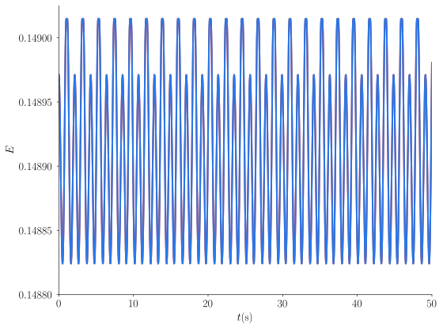
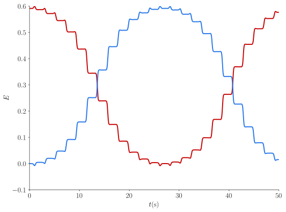
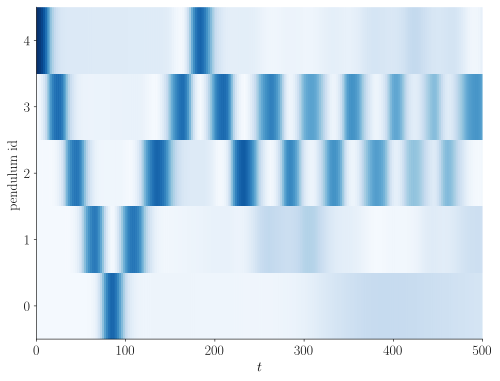
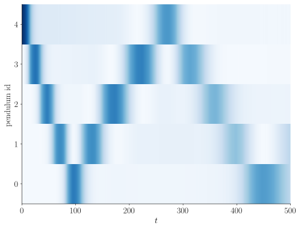

Magnetic Newton's cradle
April 23, 2026
I have learned about a physics competition for high-school students in Switzerland; the subject was about Newton's cradle, but with magnets. Pretty cool. In the classical Newton's cradle, a series of pendulums are positioned next to each other to form a line of beads touching each other. Pull the first bead apart from the train, release it, and it'll come back and collide into the second bead. During the collision, the energy is transferred across the train since all beads are in contact, all the way to the last bead. Thanks to its new kinetic energy, the last bead leaves the train, drawing the trajectory of a pendulum until it collides again into the train. This process repeats periodically and gives a very satisfying motion, where only the two beads at the extremities of the train follow the dynamics of a pendulum for half a period at a time.
In the magnetic case, we have magnets instead of beads, attached to rigid (massless) arms. We can model each magnet as a magnetic dipole, and the interaction between magnets is now smooth over a distance, and decreases as . This means that non-neighbouring pendulums also interact, although these interactions are small.
I wanted to know whether these additional interactions dramatically change the dynamics or whether similar patterns emerge as in the classical case. We can write an ODE for the evolution of the system of pendulums (they are all identical, with length and mass ): where is the angle between the vertical direction and the pendulum, is the moment of inertia of the pendulum, and the right hand side are the torques due to gravity, friction and magnetic interactions, respectively.
The torque due to gravity is simply where is the gravitational acceleration. Frictions can be modeled as with a friction coefficient. Finally, the torque due to the dipole-dipole interaction between pendulum and reads where the magnetic force is given by (yes this looks complicated but it's not too bad) Here, , , and being the spacing between the pendulums and the magnetic moment magnitude of the magnets.
What is left is just to solve this numerically for different configurations. I have implemented this with the leap-frog time integrator, which is symplectic and thus conserves energy on average (when there is no friction).
Now let's look at what it does. First we consider the simpler yet interesting case: two pendulums. We can choose symmetric initial conditions () or asymmetric with and :
At first glance, the second case has much more interesting dynamics. It looks like the energy is passed from one pendulum to the other, progressively, back and forth:


We already see a clear similarity with the classical Newton's cradle: energy moves from one pendulum to another over time. However, this exchange takes a lot longer, due to the soft interactions between the magnets.
So far there is only one interacting pair. Do we still observe the same transfer of energy with more pendulums? Here is a simulation with five pendulums:

As we can see, at the beginning, the energy moves from one pendulum to the next. However, after s, this pattern breaks: two pendulums (indexed 2 and 3) exchange energy back and forth.
I suspect that this change in pattern is due to the long-range interactions between non-neighbouring pendulums. They are small, but do have an effect. Let's add dissipation to the system so that these small effects get smaller:

The pattern is now much closer to energy transfer between the extremities of the chain, we have suppressed the small dynamics due to long-range interactions. Of course the dissipation makes the total energy of the system decrease over time, as the figure above shows (colors fade over time).
This simple experiment made me understand why Newton's cradle is so clean: energy travels between pendulums through local interactions, while in the magnetic case energy is also transferred to all other pendulums. This makes the pattern less clean when there are more than two pendulums (but more fun and unpredictable).
All figures were generated with this script:
Show code
#!/usr/bin/env python
import argparse
import matplotlib.pyplot as plt
from matplotlib.animation import FuncAnimation
import numpy as np
import os
def make_animation(trace, L, sep, step=1):
trace_view = trace[::step]
nt, ns = trace_view.shape
n = ns // 2
fig, ax = plt.subplots()
ax.set_xlim(-L, L + (n - 1) * sep)
ax.set_ylim(-1.2 * L, 0.2 * L)
ax.set_aspect('equal')
ax.set_axis_off()
lines = []
markers = []
for i in range(n):
line, = ax.plot([], [], '-k', lw=2)
marker, = ax.plot([], [], 'o', c=f'C{i}', ms=15)
lines.append(line)
markers.append(marker)
def init():
for line, marker in zip(lines, markers):
line.set_data([], [])
marker.set_data([], [])
return lines + markers
def update(frame):
thetas = trace_view[frame, :n]
for i, theta in enumerate(thetas):
x0 = i * sep
y0 = 0.0
x1 = x0 + L * np.sin(theta)
y1 = -L * np.cos(theta)
lines[i].set_data([x0, x1], [y0, y1]) # rod
markers[i].set_data([x1], [y1]) # tip only
return lines + markers
anim = FuncAnimation(fig, update, frames=nt, init_func=init, blit=True)
return anim
def main():
parser = argparse.ArgumentParser()
parser.add_argument('--n', type=int, default=5, help='number of pendulums')
parser.add_argument('--init', type=str, default='one',
choices=['one', 'two_sym'],
help='initialization')
parser.add_argument('--T', type=float, default=500.0, help='simulation time (s)')
parser.add_argument('--friction-coeff', type=float, default=0.0, help='friction coefficient (Nm/s)')
parser.add_argument('--out-dir', type=str, default=None)
parser.add_argument('--plots', type=str, nargs='+', default=['energy_path'],
choices=['energy_path', 'energy', 'trajectory', 'animation', 'phase_space'])
args = parser.parse_args()
n = args.n
init_type = args.init
out_dir = args.out_dir
assert n >= 1
if out_dir is not None:
os.makedirs(out_dir, exist_ok=True)
g = 9.81 # m/s^2
mu0 = 1.256637 # N / A**2
L = 1.0 # m
sep = 0.5 # m
m = 1.0 # kg
J = L**2 * m # moment of inertia
T = args.T
friction_coeff = args.friction_coeff
magn_moment = 0.02 # A / m**2
theta_0 = np.zeros(n)
if init_type == 'one':
theta_0[0] = np.deg2rad(-20.0)
elif init_type == 'two_sym':
theta_0[0] = np.deg2rad(-10.0)
theta_0[-1] = np.deg2rad(10.0)
else:
raise ValueError(f"unknown initialization {init_type}")
omega_0 = np.zeros_like(theta_0)
t = 0.0
dt = 0.02
times = [t]
trace = [np.concatenate((theta_0, omega_0))]
theta, omega = theta_0.copy(), omega_0.copy()
def energy(theta, omega):
Ek = 0.5 * J * omega**2
Eg = m * g * L * (1 - np.cos(theta))
mx = magn_moment * np.cos(theta)
my = -magn_moment * np.sin(theta)
x = np.arange(len(theta)) * sep + L * np.sin(theta)
y = -L * np.cos(theta)
dx = np.subtract.outer(x, x)
dy = np.subtract.outer(y, y)
r2 = dx**2 + dy**2
r = np.sqrt(r2)
eps = 1e-12
rinv = 1.0 / np.maximum(eps, r)
nx = dx * rinv
ny = dy * rinv
m1x = mx[:, None]
m1y = my[:, None]
m2x = mx[None, :]
m2y = my[None, :]
m1m2 = m1x * m2x + m1y * m2y
rm1 = nx * m1x + ny * m1y
rm2 = nx * m2x + ny * m2y
U = -mu0 / (4 * np.pi) * (3 * rm1 * rm2 - m1m2) / np.maximum(eps, r**3)
np.fill_diagonal(U, 0.0)
# split each pair energy equally between the two pendulums
Em = 0.5 * np.sum(U, axis=1)
return Ek + Eg + Em
def domegadt(theta, omega):
Tg = -m * g * L * np.sin(theta)
Tf = -friction_coeff * omega
mx = magn_moment * np.cos(theta)
my = -magn_moment * np.sin(theta)
x = np.arange(len(theta)) * sep + L * np.sin(theta)
y = - L * np.cos(theta)
dx = np.subtract.outer(x, x)
dy = np.subtract.outer(y, y)
r2 = dx**2 + dy**2
r = np.sqrt(r2)
eps = 1e-12
nx = dx / np.maximum(eps, r)
ny = dy / np.maximum(eps, r)
m1x = mx[:,None]
m1y = my[:,None]
m2x = mx[None,:]
m2y = my[None,:]
rm1 = nx * m1x + ny * m1y
rm2 = nx * m2x + ny * m2y
m1m2 = m1x * m2x + m1y * m2y
fx = rm1 * m2x + rm2 * m1x + m1m2 * nx - 5 * rm1 * rm2 * nx
fy = rm1 * m2y + rm2 * m1y + m1m2 * ny - 5 * rm1 * rm2 * ny
r4 = np.maximum(eps, r2 * r2)
fx *= 3 * mu0 / (4 * np.pi * r4)
fy *= 3 * mu0 / (4 * np.pi * r4)
fx = np.sum(fx, axis=1)
fy = np.sum(fy, axis=1)
x = L * np.sin(theta)
y = - L * np.cos(theta)
Tm = x * fy - y * fx
return (Tg + Tf + Tm) / J
def dthetadt(theta, omega):
return omega
energies = [energy(theta, omega)]
while t < T:
omega1 = omega + dt/2 * domegadt(theta, omega)
theta = theta + dt * dthetadt(theta, omega1)
omega = omega1 + dt/2 * domegadt(theta, omega1)
t += dt
trace.append(np.concatenate([theta, omega]))
times.append(t)
energies.append(energy(theta, omega))
trace = np.asarray(trace)
times = np.asarray(times)
energies = np.asarray(energies)
n = len(theta_0)
if 'energy_path' in args.plots:
fig, ax = plt.subplots()
ax.imshow(energies.T,
aspect='auto',
interpolation='none',
cmap='Blues',
extent=[0,T, 0,n])
ax.set_xlabel(r'$t$')
ax.set_ylabel('pendulum id')
if n < 10:
ax.set_yticks(np.arange(n) + 0.5)
ax.set_yticklabels(np.arange(n))
if out_dir is None:
plt.show()
else:
plt.savefig(os.path.join(out_dir, 'energy_path.svg'))
if 'energy' in args.plots:
fig, ax = plt.subplots()
for i in range(n):
ax.plot(times, energies[:,i])
ax.set_xlabel(r'$t$(s)')
ax.set_ylabel(r'$E$')
plt.tight_layout()
if out_dir is None:
plt.show()
else:
plt.savefig(os.path.join(out_dir, 'energy.svg'))
if 'trajectory' in args.plots:
fig, ax = plt.subplots()
C = 1.2 * np.ptp(energies)
for i in range(n):
ax.plot(times, i * C + trace[:,0+i])
ax.set_xlabel(r'$t$(s)')
ax.set_ylabel('amplitude')
ax.set_xlim(0, T)
ax.set_ylim(-0.5 * C, (n - 0.5) * C)
ax.set_yticks(C * np.arange(n))
ax.set_yticklabels(np.arange(n))
if out_dir is None:
plt.show()
else:
plt.savefig(os.path.join(out_dir, 'trajectory.svg'))
if 'phase_space' in args.plots:
fig, ax = plt.subplots()
for i in range(n):
ax.plot(trace[:,i], trace[:,n+i]/np.pi)
ax.set_xlabel(r'$\theta$')
ax.set_ylabel(r'$\omega/\pi$')
ax.set_aspect('equal')
if out_dir is None:
plt.show()
else:
plt.savefig(os.path.join(out_dir, 'phase_space.svg'))
if 'animation' in args.plots:
anim = make_animation(trace, L=L, sep=sep, step=5)
if out_dir is not None:
anim.save(os.path.join(out_dir, 'animation.mp4'), fps=60)
if __name__ == '__main__':
main()